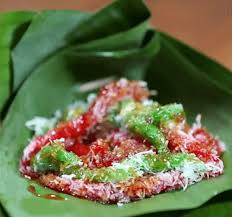
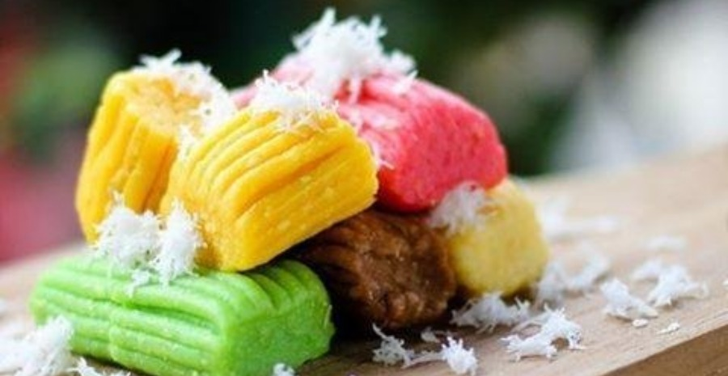
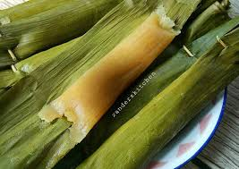
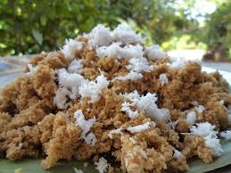

Menu Pilihan
-
 Cenil atau cetil adalah makanan yang terbuat dari pati ketela pohon. Makanan ini bisa dibentuk bulat-bulat kecil atau kotak kemudian diberi warna sesuai selera sebelum direbus.
-
 Getuk adalah makanan ringan yang terbuat dengan bahan utama ketela pohon atau singkong.
-
 Sate buntel, adalah sejenis sate yang dibuat dari daging kambing cincang yang dibungkus dengan lemak kambing lalu dibakar
-
 Makanan khas yang pertama adalah nasi tiwul. Makanan ini khas-nya Wonogiri dan Wonosari. Terbuat dari tepung gaplek, yaitu singkong yang dikeringkan terus ditumbuk.